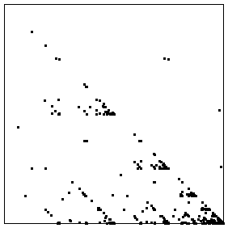

|
First, we drive the IFS by closing prices. The driven IFS is not very interesting. |
| Long-term financial data usually are presented on a logarithmic scale. Will this help? Alas, no. The driven IFS still is boring. | |
|  | Finally, we drive the IFS with the differences of the logs of the closing prices. This shows some promise. |